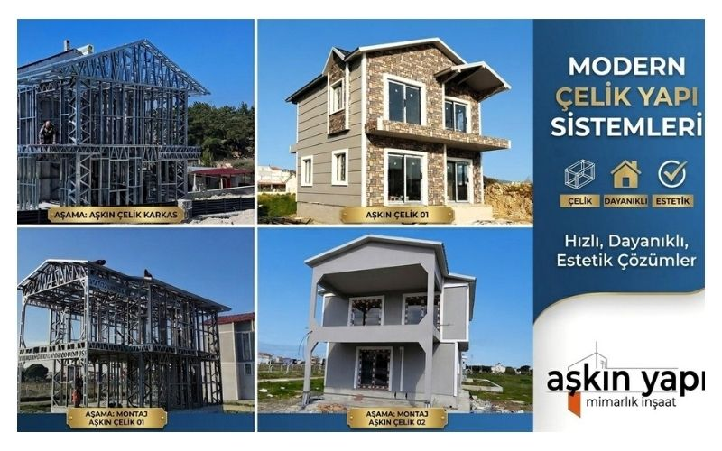
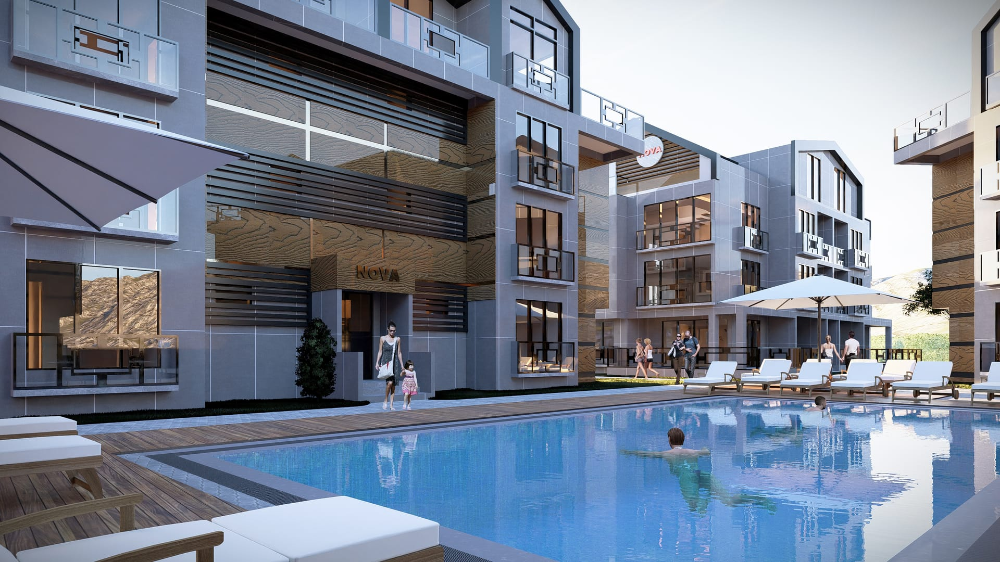
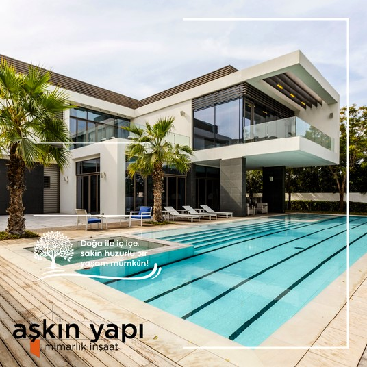
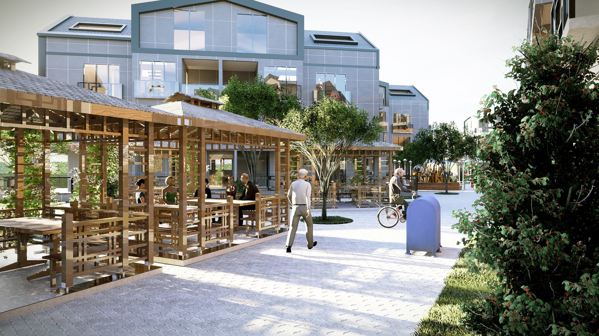
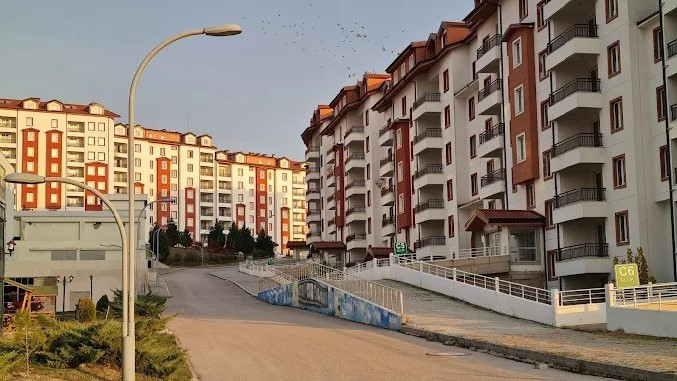

Dikili / İzmirÇelik Sistem
Çelik Villa Uygulaması
Hafif çelik sistem taşıyıcı çözüm ile villa tipi yapıda sahaya özel uygulama.
Projeyi İncele →Aşkın Yapı; konut, ticari yapı, çelik sistem ve proje geliştirme süreçlerinde tasarım, saha koordinasyonu, uygulama ve teslim adımlarını bütüncül bir iş modeliyle ele alır.

Çelik sistem yapılar, konut projeleri, görselleştirme çalışmaları ve saha uygulamaları tek çatı altında sunuluyor.

Hafif çelik sistem taşıyıcı çözüm ile villa tipi yapıda sahaya özel uygulama.
Projeyi İncele →
Konut ve açık alan kurgusunu bir araya getiren proje görseli ve geliştirme dili.
Projeyi İncele →
Konut bloğu için geliştirilen cephe dili ve sunum görselleri.
Projeyi İncele →
Beypazarı / Ankara büyük ölçekli yerleşim projesi (1.350.000 m²), AVM ve sosyal tesisler, çelik yapılar ve havuz projeleri referans portföyümüzü oluşturmaktadır.
Tasarım, mühendislik, saha uygulaması ve teslim yönetimi tek çatı altında. Farklı firmalar arasında koordinasyon yükü olmadan proje teslimi.
2011'den bu yana yüzlerce proje ve 100'ün üzerinde havuz uygulaması. Beypazarı gibi 1.35 milyon m² ölçeğinde proje deneyimi.
Türkiye ve Birleşik Krallık'ta kurumsal ofis varlığı. Yabancı yatırımcı ve ortaklar için tanıdık bir iş ortamı, Türkiye'de güçlü saha ağı.